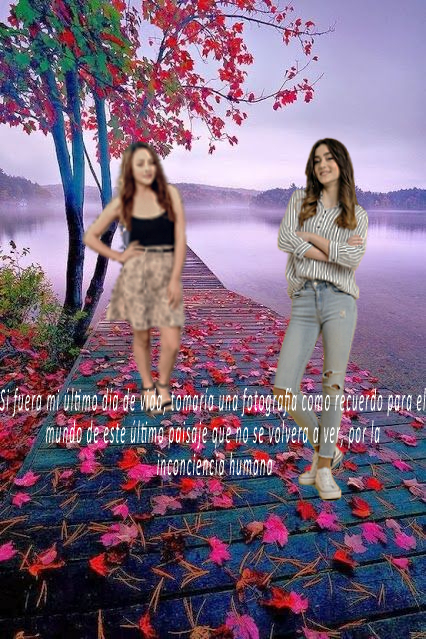

K-pop
Canciones del genero de K-pop
| Las más escuchadas | Música de los grupos más conocidos | 4 canciones de banda sonora de K-Drama cantadas por idols de K-pop |
|---|---|---|
 Butter Butter |
 BTS BTS |
 SHINee- "Stand by me" (de "Boys Over Flowers") SHINee- "Stand by me" (de "Boys Over Flowers") |
 Dynamite Dynamite |
 Blackpink Blackpink |
 Jus2- "Take" (de "He is psychometric") Jus2- "Take" (de "He is psychometric") |
 Permission to dance Permission to dance |
 Twice Twice |
 Jin y V de BTS- "Even if I die, I´ts You" (de " Hwarang") Jin y V de BTS- "Even if I die, I´ts You" (de " Hwarang") |
 Life Goes On Life Goes On |
 Mamamoo Mamamoo |
 Stray Kids- "Neverending Story" (de "Extraordinary You") Stray Kids- "Neverending Story" (de "Extraordinary You") |
 How You Like That How You Like That |
 EXO EXO |
|
 Boy With Luv Boy With Luv |
||
 Money Money |
¿Qué es el K-Pop?
Se trata de un estilo de música que es “originaria” de Corea del Sur y tiene como peculiaridad que se encuentra conformada por distintos tipos de música, éste a pesar de que se encuentra compuesto por gran diversidad de géneros musicales de tipo popular surcoreano, el término se aplica con mayor frecuencia a la Industria musical que se caracteriza por introducir géneros de música y estilos provenientes de occidente, como por ejemplo el rock, el jazz, hip-hop, reggae, country y música clásica, todo ello por encima de las raíces musicales autóctonas de Corea.

Datos curiosos sobre el K-pop.
*Tienen que entrenar antes de poder debutar en un grupo o como solistas y el periodo de entrenamiento dura de 1 hasta 10 años incluso algunos entrenan pero aún así no son escogidos.

*Los idols de kpop no son solo coreanos tambien hay tailandeses, chinos, japoneses, taiwaneses.

* Los grupos tienen muchos miembros y la cantidad va desde 3 integrantes hasta por lo general 20

*BTS es el grupo de kpop que mas ha impactado en la economía de su país, solo ellos entran 2 billones de wons (1 millón de dólares) anual.

Cancciones similares:
Más contenido...
Mapa de ubicación
Todos los derechos reservados Música M V-COPYRIGHT © 2022